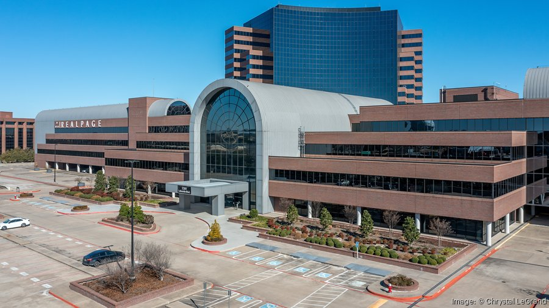

.jpg)
Our Story
Founded in 1998 by a small group of passionate local real estate professionals, RealHome Realty began as a family-run office with one simple goal: to help families find not just a house, but a place to truly call home. Over the years, our dedication to honesty, integrity, and personalized service allowed us to grow from a humble neighborhood agency into a trusted name in real estate throughout the region.
From the beginning, our mission has been clear — to connect families with homes where they can build memories that last for generations. Whether it’s watching children take their first steps in a cozy living room, hosting backyard barbecues, or enjoying quiet evenings on the porch, we understand that the right home sets the stage for life’s most meaningful moments.
At RealHome Realty, we intentionally focus exclusively on single-family residential properties. This specialization allows our agents to become true neighborhood experts — understanding the details that make each community unique, from lot sizes and architectural styles to school districts, local parks, and nearby amenities. Our commitment ensures that every recommendation we make is backed by deep local knowledge and a genuine understanding of what families value most.
Today, RealHome Realty is proud to remain locally owned and community-focused. Many of our agents are lifelong residents themselves — parents, volunteers, and neighbors who care deeply about the communities we serve. We believe that finding the right home isn’t just a transaction; it’s a partnership built on trust, compassion, and expertise.
As we continue to grow, our vision remains the same:
To help every family discover the place where they truly belong — a RealHome that feels like home.
What Sets Us Apart

At RealHome Realty, we believe that what truly sets us apart isn’t just what we do — it’s how we do it. Our agents don’t just work in the neighborhoods they represent; they live there, raise their families there, and actively contribute to their communities. This genuine connection gives us a deep understanding of local market trends, school districts, neighborhood culture, and even those hidden gems that only locals know about.
Our local expertise means our clients benefit from insights that go far beyond the listings — we help you understand what makes each street, park, and community unique, ensuring that your next home truly fits your lifestyle.
We take pride in our transparent pricing, honest communication, and client-first approach. From the very first consultation to closing day, our team keeps you informed, supported, and confident. We know that buying or selling a home can feel overwhelming, so we make the process as stress-free and predictable as possible, guiding you through every detail with care and clarity.
To make your real estate journey even smoother, we offer a suite of complimentary services, including:
- Comprehensive market reports to help you make informed decisions
- Professional staging advice to highlight your home’s full potential
- Access to our trusted network of preferred lenders, inspectors, and contractors
- Personalized marketing strategies designed to attract the right buyers quickly and effectively
At RealHome Realty, our commitment goes far beyond the transaction — we aim to build relationships that last long after the keys are handed over. When you work with us, you’re not just getting a real estate agent; you’re gaining a dedicated partner who genuinely cares about your success and satisfaction.